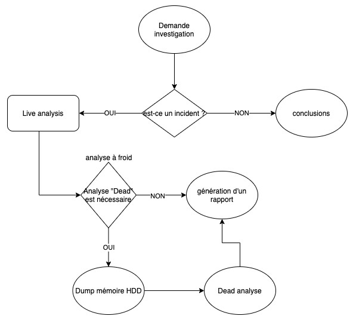

Forensic
- Enquete scientifique
- La preuve de doit pas être altérée
- Préserver l'information
Forensic physique
- ADN
- Empreintes digitales
- Sang
- etc
Forensic numérique (informatique légale)
- Periphérique de stockage
- Traces réseaux
- Traces mémoire vive
La gendarmerie met un ordi sous cellé (toujours à deux), le cache, signature.
Conservation de la preuve
- La preuve ne doit jamais être altérée, même de façon infime.
Traçabilité
- Obligatoire de tracer qui a fait quoi, quand. (chain of custody)
Phases de l'info légale
1) Conservation de la peuvre => aucun dommage / atltération effectué sur la preuve 2) Recherche de preuve(s) 3) Reconstruction des evenements - reconstruire les evenements sur un plan chronologique suite aux preuves trouvés => 2)
Attaque info (incident/réponse)
1) Valider s'il sagit d'un incident (recherches préliminaires). - un serveur qui perd des fichiers => peut-être un simple bug windows ou une attaque 2) Si c'est un incident - Préservation des données et traçabilité - Recherche de preuve - Remise en ordre des evênements 3) Rapport complet

Erreurs à ne pas faire
- Redémarer la machine
- Allumer la machine
- Extraire le disque dur et le brancher en externe (antivirus va scan, windows monte en lecture/écriture), monter le disque en lecture/écriture
- Ne pas investiguer tout de suite ! On ne travail jamais sur la preuve, on la copie puis on taff dessus.
Les bonnes pratiques
- Pour investiguer un disque dur il faut un HDD locker, c'est un chariot externe avec un système qui empêche l'écriture sur le disque (electroniquement)